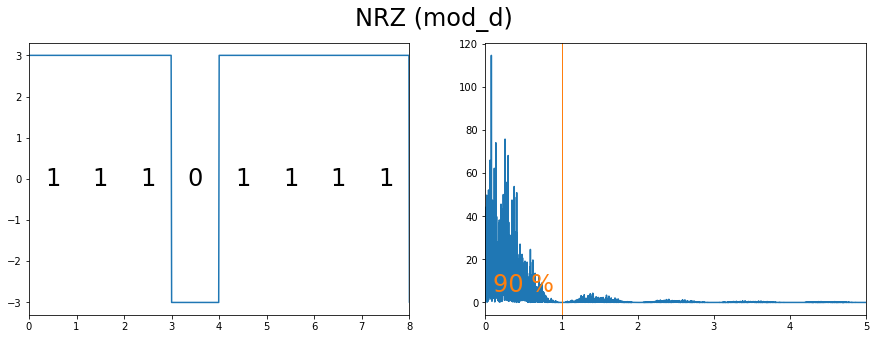
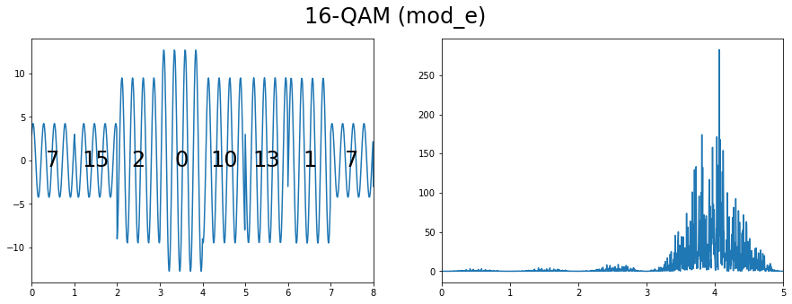
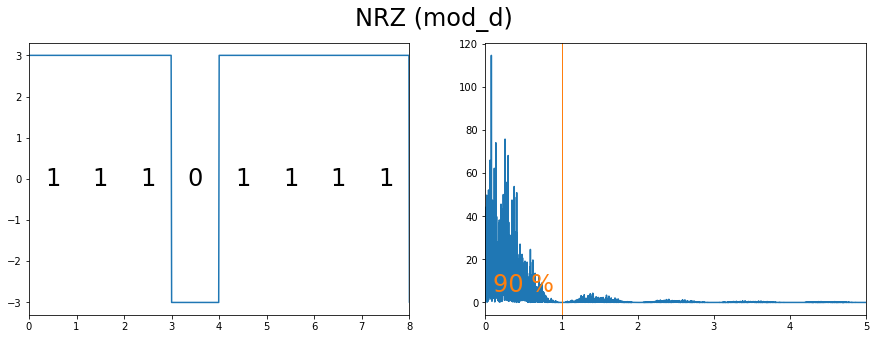
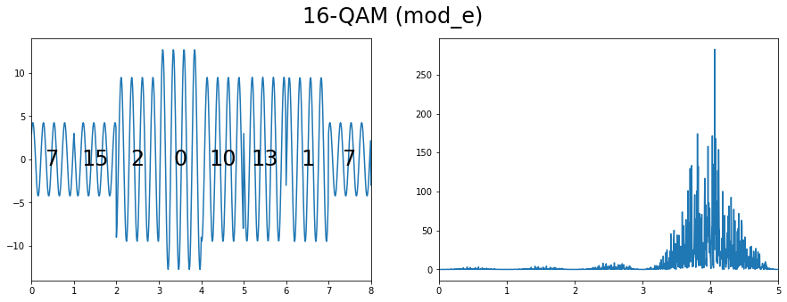

TP Modulation - Étude de quelques modulations numériques¶
vincent.mazet@unistra.fr, 03/2022
On veut étudier les propriétés et les effets des modulations : ce sont des signaux analogiques et aléatoires, il faut donc un traitement statistique aléatoire. Pour cela, on peut faire des calculs en utilisant les outils du traitement statistique du signal. Pour éviter des calculs fastidieux, on va utiliser les outils numériques sur des signaux simulés.
import numpy as np
from scipy import signal
import matplotlib.pyplot as plt
Utilisation du module comnumfip¶
Le module comnumfip regroupe de fonctions particulières pour faire les TP. Il s’agit simplement d’un unique fichier (comnumfip.py) téléchargeable sur GitHub à l’adresse :
https://github.com/vincmazet/comnumfip
Une fois le fichier comnumfip.py téléchargé, il suffit de l’ajouter dans le dossier contenant le notebook.
L’aide des fonctions de ce module est accessible directement sur la page web du module, ou bien en utilisant l’instruction help(fonction). Par exemple :
import comnumfip as cnf
help(cnf.randmary)
Help on function randmary in module comnumfip:
randmary(N, p)
Génération d'une séquence M-aire.
Entrées :
N (scalar) : taille de la séquence (nombre de symboles)
P (array) : probabilité des symboles (sa taille correspond à la taille de l'alphabet)
Sortie :
c (array) : séquence aléatoire M-aire où M = len(P).
Exemples :
# séquence binaire de taille 1000, symboles équiprobables :
c1 = randmary(1000,[0.5, 0.5])
# séquence binaire de taille 100, p("0") = 0.3, p("1") = 0.7 :
c2 = randmary(100,[0.3, 0.7])
# séquence 4-aire de taille 10, symboles équiprobables :
c3 = randmary(10,np.ones(4)/4)
Code principal¶
La fonction randmary produit une séquence M-aire, et la fonction bin2mary permet de convertir une séquence binaire en séquence M-aire.
# Nombre de bits dans la séquence binaire
N = 1000
# Séquence binaire (avec probabilité égale des bits 0 et 1)
m2 = cnf.randmary(N,[.5, .5])
# Conversion en séquence hexadécimale
m16 = cnf.bin2mary(m2,16)
# Affichage
print(f"Séquence binaire : {m2[:16]}\b ...]")
print(f"Séquence hecadécimale : {m16[:4]}\b ...]")
print(f"Attention : LSB (low significant bit) à gauche !")
Séquence binaire : [1 1 1 0 0 1 1 0 1 0 0 0 0 1 0 0 ...]
Séquence hecadécimale : [7 6 1 2 ...]
Attention : LSB (low significant bit) à gauche !
À partir des séquences binaires et hexadécimale créées, qui représentent toutes les deux le même message, on représente différentes modulations (seuls les premiers symboles son représentés) et leur périodogramme :
# Modulations à étudier
modulations = {
"AMI": cnf.mod_a,
"BPSK": cnf.mod_b,
"Manchester": cnf.mod_c,
"NRZ": cnf.mod_d,
"16-QAM": cnf.mod_e,
}
# Amplitude et durée d'un bit
V, T = 3, 1
# Taille de la séquence à afficher
K = 8
# Affichage
for name in modulations:
m = m2 if name != "16-QAM" else m16
# Modulation
mod = modulations[name]
t, x = mod(m, V, T)
# Fenêtre
fig, ax = plt.subplots(1, 2, figsize=(15,5))
fig.suptitle(f"{name} ({mod.__name__})", fontsize=24)
tm, fr = ax
# Signal temporel
tm.plot(t,x)
tm.set_xlim([0, K*T])
# Texte
mid = (x.max()+x.min())/2
for n in range(K):
tm.text(n*T+T/2, mid, m[n], fontsize=24, ha="center", va="center")
# Densité spectrale de puissance
f, Pxx = signal.periodogram(x, 100/T)
fr.plot(f, Pxx)
fr.set_xlim([0, 5])
# Fraction d'énergie
if name in ["AMI", "Manchester", "NRZ"]:
f0 = 1
frac = np.sum(Pxx[f<f0]) / np.sum(Pxx)
fr.axvline(f0, color="tab:orange", linewidth="1")
fr.text(f0/2, 5, f"{100*frac:.0f} %", color="tab:orange", ha="center", fontsize=24)


 



Quelle modulation adaptée aux communications ?¶
Bus informatique ou de terrain : modulation en bande de base (I2C : NRZ, SATA : 8b/10b encoding, ASI : Manchester, KNX : sorte de Manchester, HART : FSK binaire superposé au 4-20 mA)
liaison Wi-Fi : modulation sur porteuse (QAM, PSK, ou autre suivant la version de la norme)
périphérique USB et ordinateur : modulation en bande de base (NRZI)
téléphone mobile et antenne relais : modulation sur porteuse (GSM = 900 MHz et 1800 MHz, avec variantes)